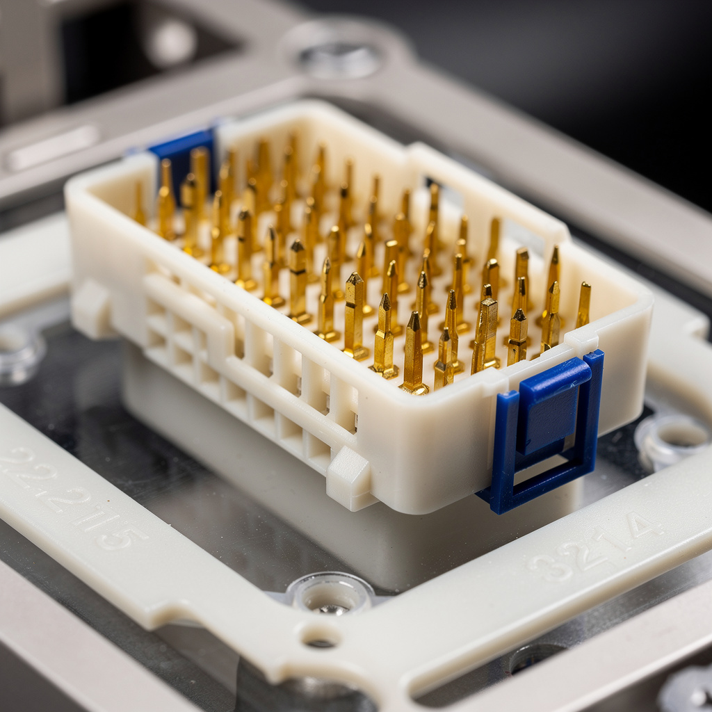
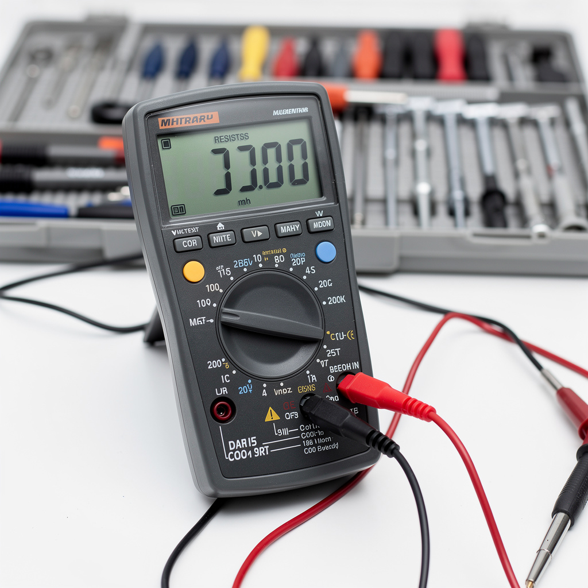

Analyse cause racine — Banc de test électrique
// Le Problème
Symptôme : Taux de rejet test continuité anormal : 12 % sur une même référence produite depuis plusieurs jours sans changement d'outillage (vs 1–2 % habituel).
Conséquence : 240+ pièces rebutées/jour. Risque blocage ligne client automobile.
// Diagnostic (Pareto + Ishikawa + 5 Pourquoi)
Analyse data 15 jours : dérive lente résistance continuité. Tolérance < 10 mΩ ; départ 3–5 mΩ → dérive 8–12 mΩ → dépassement = rebut.
Pareto des rebuts (342 pièces) : ~2/3 broches de contact (pins) oxydées, ~1/4 câbles de piquage usés, reste divers.
Inspection : 14/32 pins présentent oxydation CuO noire visible. Dernier nettoyage documenté > 6 mois. Hotte extraction fumées de soudure amont saturée : débit 80 m³/h (vs 120 min).
Cause racine : vapeurs de soudure non extraites + absence gamme nettoyage pins = oxydation progressive des contacts du banc.



// Solution apportée
// Résultat mesuré
Taux de rejet : 12,3 % → 1,1 % stable sur 30 jours. ~220 pièces/jour sauvées. Procédure RCA formalisée partagée aux 4 lignes test + sous-traitants. Contrôle qualité départ : 25 min → 10 min/batch.